Uncertainty analysis
What and how things were covered
First I checked parity of the original code with my refactored code. This is OK!
In all cases I visually checked the output of the current model run to the reference data provided. Input data are also historical data except for the SMAP input files (which are “new”). The bias between the reference and current model run is reported, with the maps of both outputs shown above on the same colour scale.
Comparisons between different implementations is done visually by comparing plots to the plots with the default_ prefix.
Additionally, I’ve updated the workflow to use the NCO aggregation methodology, assuming that some of the discrepancies might be the result of fill values which are not counted in calculating the mean monthly values in R (where NAs are ignored).
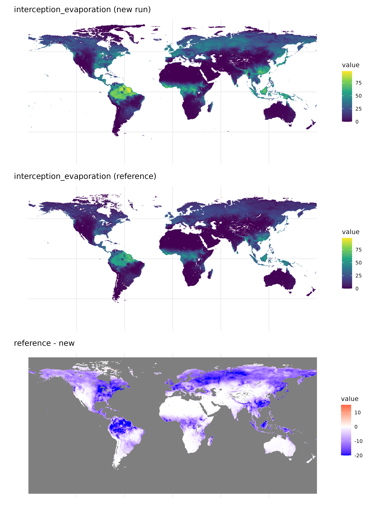
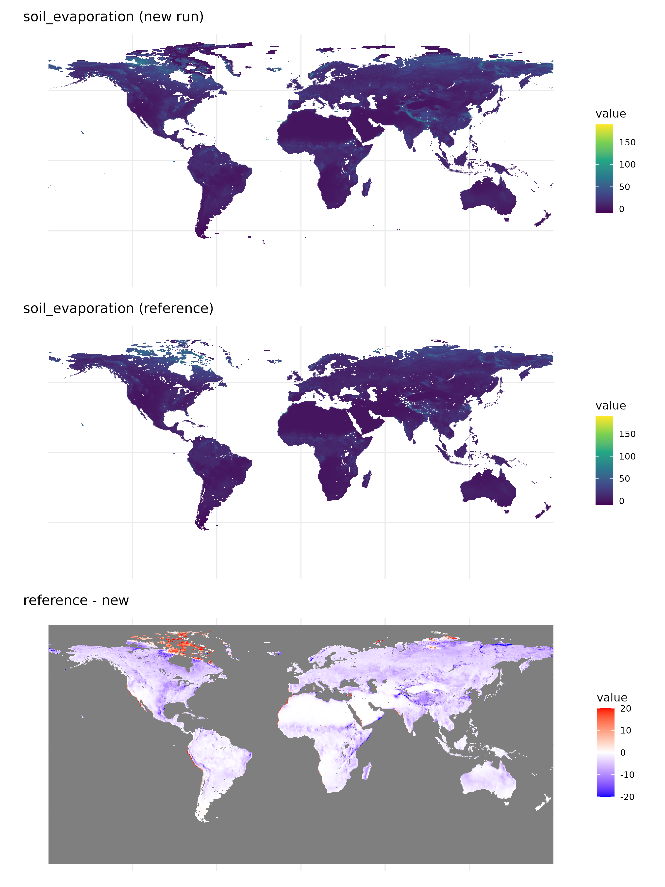
Main parameters concidered
A number of parameters influence the results of:
- canopy transpiration
- interception evaporation
- soil evaporation
mainly, relative_surface_wetness and soil_net_radiation.
The latter is only dependent on the climate (although coupled to the vegetation), the former has an explicit vegetation component to it via leaf_area_index. Both are prime candidates to explain the mismatch as the pattern shown reflects biogeographic regions. Changes to the model runs focus on aspects which would influence these parameters.
relative humidity and relative surface wetness
Relative surface wetness (relative humidity4) mediates all the above results. However, few mistakes can be made as the data only depends on pressure and temperature and pressure data - and the underlying physical formulas are correct.
Swapping out the mean daily temperature for the maximum temperature, should decrease relative humidity. The results from this exercise are shown below, showing a shift in the observed patterns when comparing the reference data to the current model run.
In short, relative surface wetness is extremely sensitive to (small) changes in the input variables. However, it is unsure what other inputs could be used to increase correspondence between reference and current model runs.
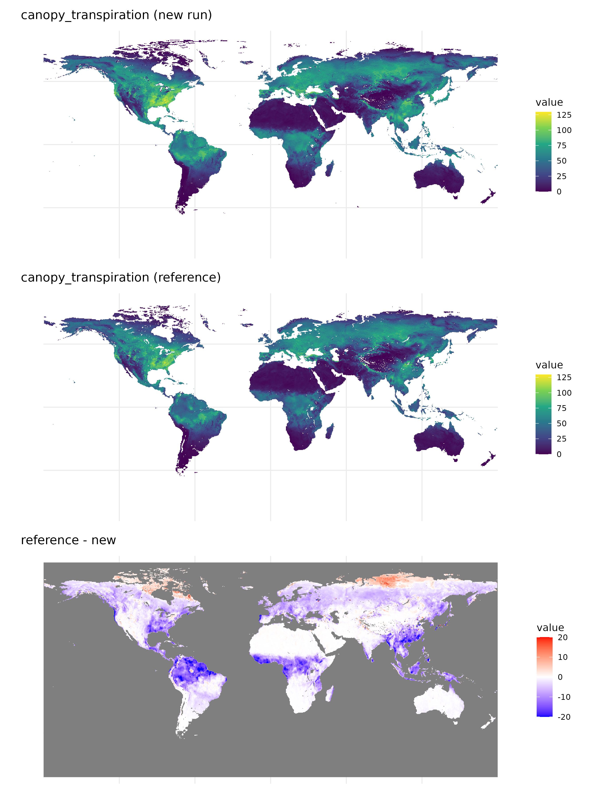
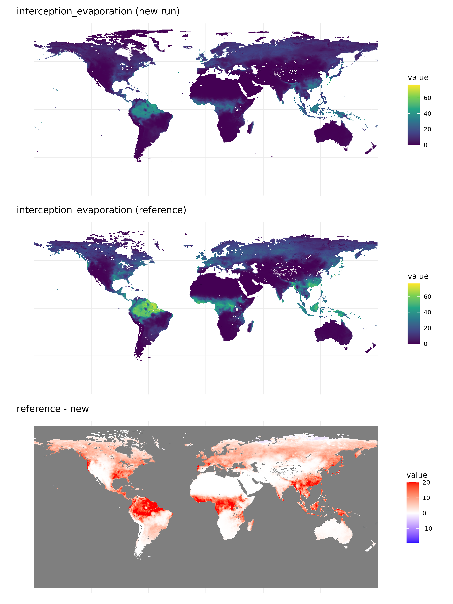
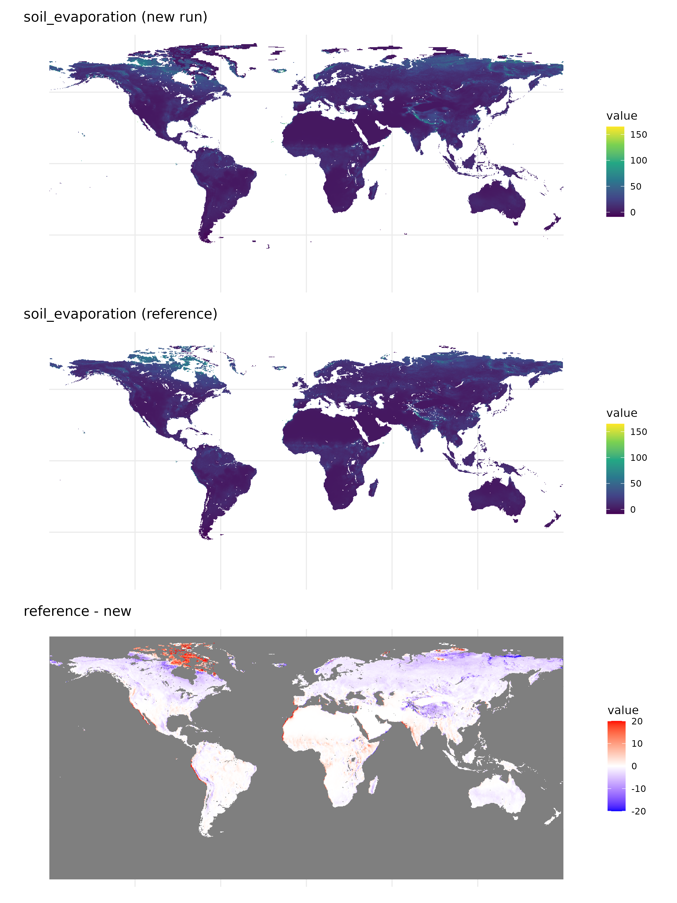
constraint fAPAR / fIPAR
Constraining fAPAR / fIPAR to 0 - 1 ranges before the calculation of derivative indices does not change the results appreciably. The idea here is that some of the discrepancies are caused by the leaf area index influenced variables (gfrac, soil_net_radiation), where:
canopy_net_radiation = net_radiation - soil_net_radiation
which is the main energy budget component in interception evaporation and canopy transpiration. Out of bound values could then be a source of the biases seen in the data.
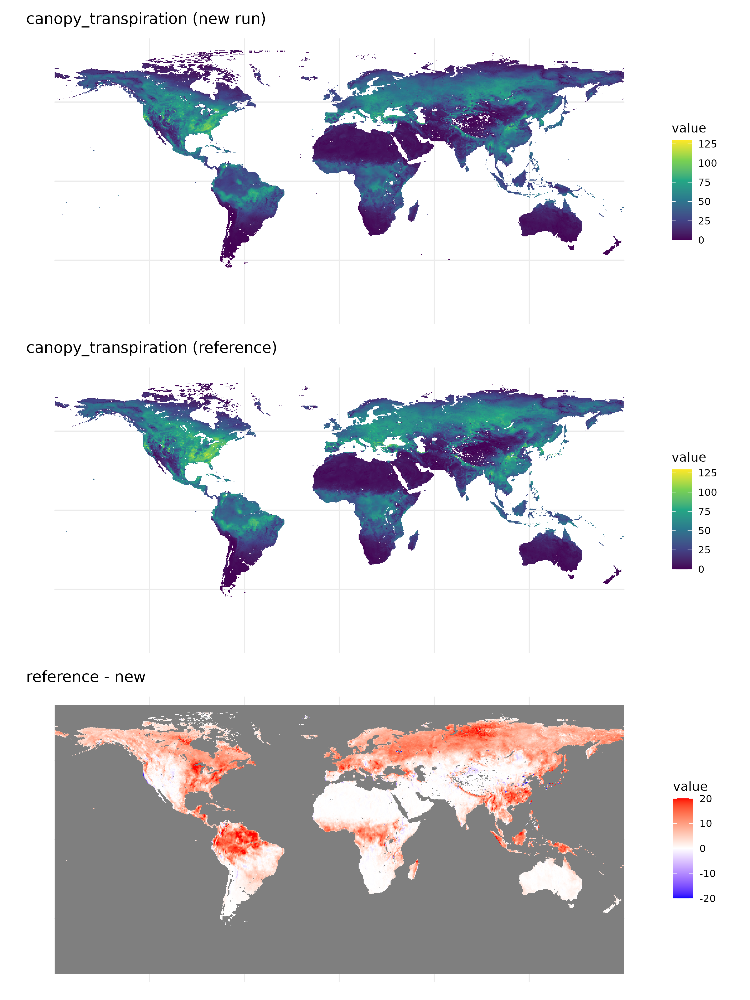
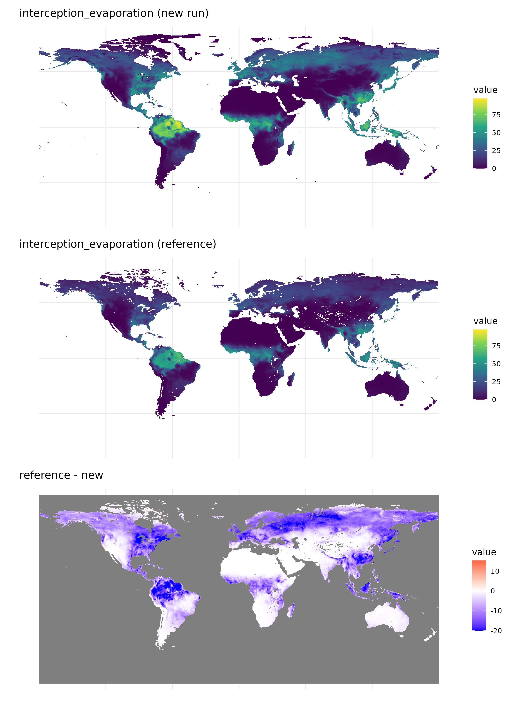
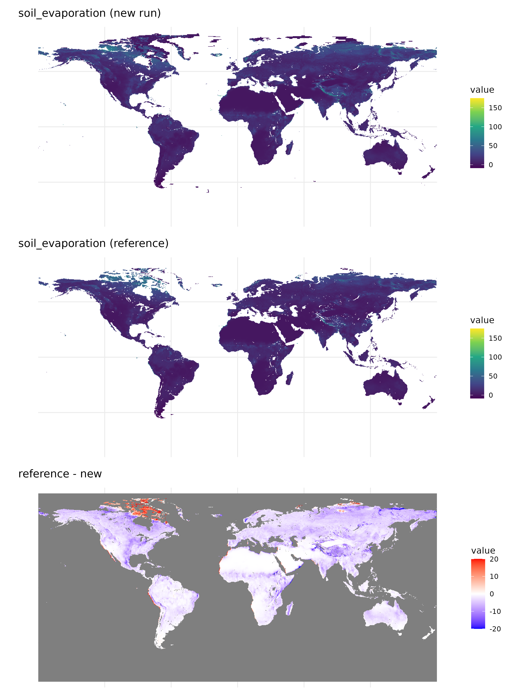
modulate KPAR (0.4)
KPAR determines the shape of the relation between fIPAR and LAI, modulating this parameter should provide some insight into the response of LAI on the model output (via soil_net_radiation and hence canopy_net_radiation).
Patterns are inconsistent and non-linear for canopy transpiration, with arid regions flipping in the sign of the response between reference and current model run values. There is surprisingly little influence on interception evaporation, only a slight lower biases.
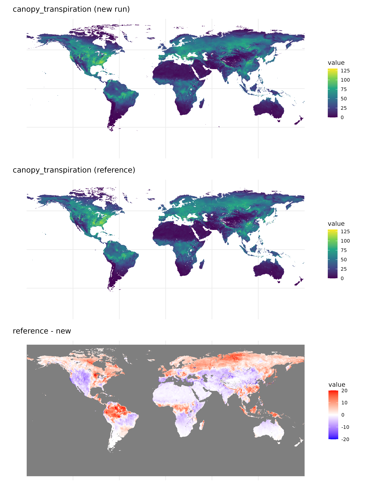
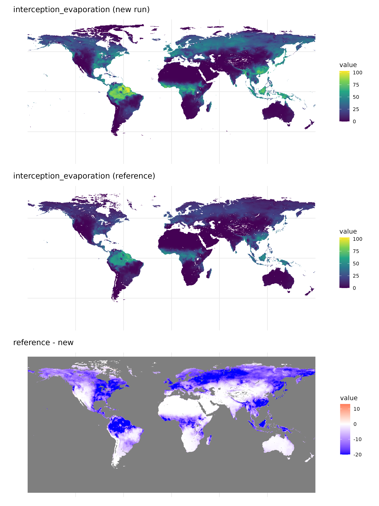
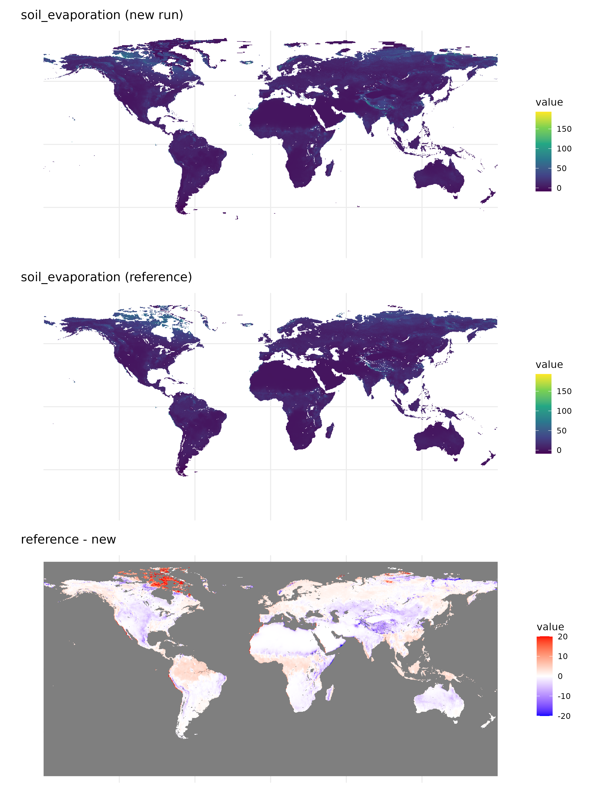
Other observations
When considering the SMAP output, independent of the magnitude of the deviation, there is a lack of banding which is associated with the SMAP fly over patterns (even after averaging over a month) in the reference data. Is this due to a change in resolution and or smoothing post-hoc? If so, could this be a source of uncertainty in all the above cases?
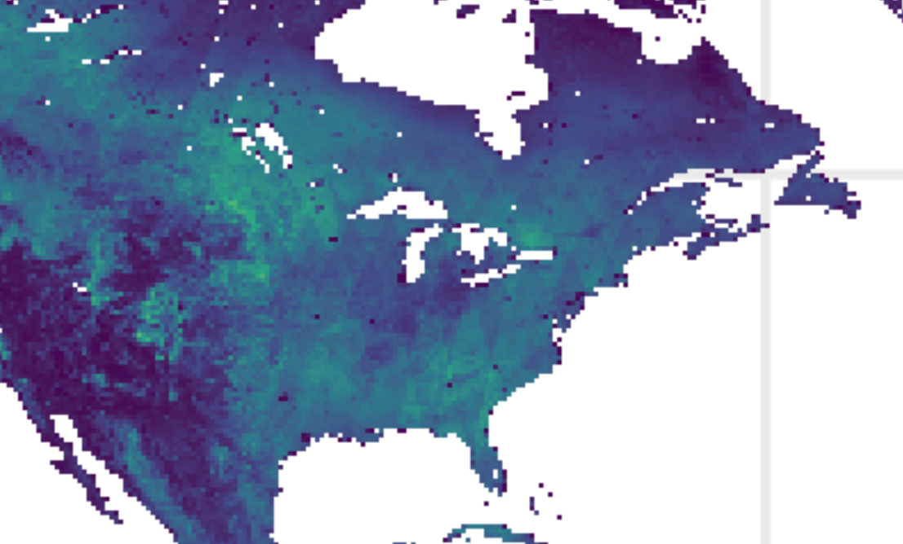
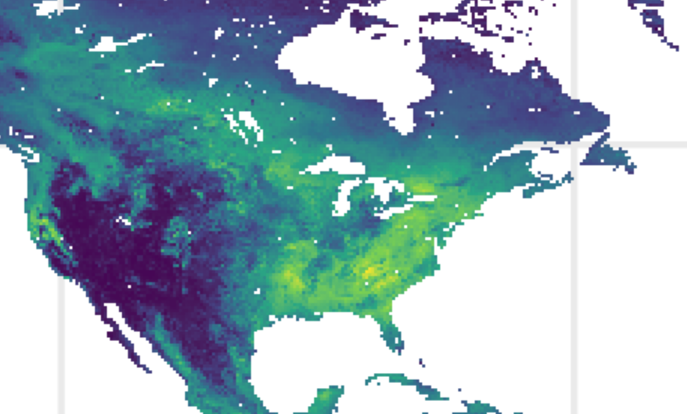